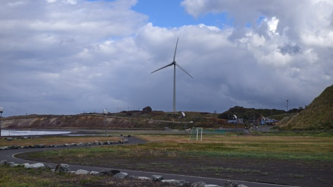

札幌 → 留萌
北海道中央巴士 · 高速るもい号
16:40札幌駅前 5番
→19:42留萌ターミナル
成人 ¥2,910。也可选 11:00 → 14:02，早点到留萌。
HOKKAIDO FIELD NOTES · 2026.10
苫前的风车、羽幌的街口、初山别的天文台。
一份用巴士连接风景的图文巡礼手帖。
2026 年 10 月实拍 · 非官方巡礼资料
先看公交怎么坐 ↓
GETTING THERE
札幌 → 留萌 → 苫前 → 羽幌 ⇄ 初山别 → 札幌。时间均为日本时间。
这是留萌中转、羽幌住两晚的慢走方案。若不想在留萌过夜，也可查 札幌直达苫前／羽幌的特急はぼろ号 ↗，但需要提前预约；别把它和非预约制的高速るもい号混淆。
北海道中央巴士 · 高速るもい号
成人 ¥2,910。也可选 11:00 → 14:02，早点到留萌。
沿岸巴士 · 12系統 幌延留萌線
16:50 苫前上町 → 17:06 羽幌ターミナル（到达）
苫前可留约 5 小时。留萌站前至苫前 ¥1,350；16:35 前回到站边。
沿岸巴士 · 12系統（北行往幌延方向）
16:53 温泉 → 17:31 羽幌ターミナル（到达）
成人单程 ¥1,250。平日早班示例 07:43 → 08:16；另有 12:03 → 12:36（1/1–3 运休）。
沿岸巴士 · 特急はぼろ号 0041便
完全预约制、全席指定。普通票价 ¥4,700；网上支付价 ¥4,420。付款后保存邮件乘车票，不必兑换实体票。
班次按 2026-10-01 改正资料整理，不是永久时刻。Google 地图可能不显示沿岸巴士的全部班次；公交看官方表，步行看地图。
 放大看留萌 2 号站牌 ↑
放大看留萌 2 号站牌 ↑
留萌ターミナル是从札幌抵达的站；北上用留萌駅前 2 号站牌。羽幌用沿岸巴士羽幌营业所，不是本社ターミナル，也不是渡轮码头。
温泉站在酒店前回车场，双向共用；返程认准往羽幌／留萌的车。苫前站区地图只帮助找区域，候车侧要看现场站牌。
01 · TOMAMAE / WALKING
从苫前上町下车，先往栄浜与海岸，再回町内。图上方是游戏画面，下方是实景；点击图片可直接打开大图。
三段合计约 5.4 公里／纯步行 75 分钟（Google 地图 2026-10-03 查询，不含拍照、吃饭、找机位及候车）。每张卡的“下一段”可查看当前距离与耗时；手机多点路线拆成三段。请走开放道路，大箱寄存未落实时先减点。
02 · HABORO / A TOWN BETWEEN JOURNEYS
这里适合做初山别往返的基地。先安顿行李，再轻装找路牌、超市与交叉路口。
03 · SHOSANBETSU / UNDER THE SKY
温泉站下车 → 岬台公园 → 天文台外观 → 圆窗大厅 → 回温泉站。10 月上午可先在公园散步，等 12:00 开馆。
 放大现场公园导览图 ↑
放大现场公园导览图 ↑当天 16:53 回羽幌的巴士，会限制傍晚停留。海边鸟居与日落是周边散步点，不冒充独立 CG 对应场景；夜间观星也要看天气和开放安排。
天文台 10 月通常 12:00–19:00，最晚入馆 18:45，周二、周三休馆（节假日另有安排）；成人 ¥200。
出发前查天文台日历 ↗STAY CLOSE TO THE SCENERY
民宿是场景优先；羽幌是交通优先；初山别温泉是日落与夜间停留优先。以下是选址建议，不代表都曾入住。


北大通 3 丁目14-1，共用卫浴。可通过官网发出预约申请，收到确认才算订好；与羽幌ターミナル并不紧挨着，另留步行时间。
想换成温泉酒店，也可看 はぼろ温泉サンセットプラザ ↗。
豊岬153，天文台旁的温泉酒店。巴士停酒店前回车场，行李不必一路拖进公园。官网在线预约，海景房需求可电话询问。
OPTIONAL DETOURS
牧场、麦田不是海岸环线的必经点。它们值得看，但不要挤进等车前的最后半小时。
古丹别旧站房也属于 anemoi 社区考据点，但需要另查支线班次，不与苫前海岸共用一个步行环线。本页整理的是此次有图可对照的核心区域，不是全作品地点全集。更多社区考据点 ↗
先核对当天星期和官方班次，再看营业日，最后确认寄存。沿岸巴士沿线没有可替代所有区间的电车；不要默认每个小站都有储物柜。时间不足就减点，回程优先。
设施入口用 Google 地图地点搜索；海岸机位、麦田等无独立商家条目的场景，另给社区场景点或实拍位置。地图到达不等于站在 CG 同机位，仍需对照照片。手机导航时选择步行，不要走封闭区域、牧场内部或田地。
实拍摄于 2026-10-02、10-03；民宿室内为补充实景素材，单独标注。游戏画面版权归 VISUAL ARTS / Key，社区考据参考 Anitabi 及 巡礼记录；对照用于非官方场景研究，不代表官方认证。